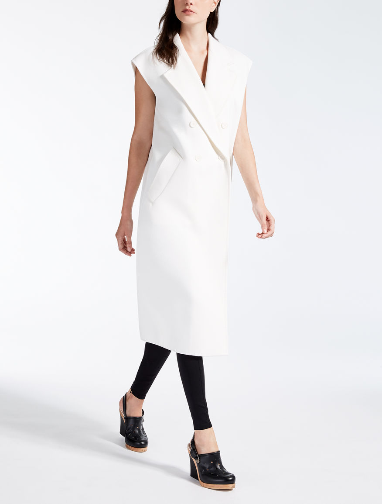
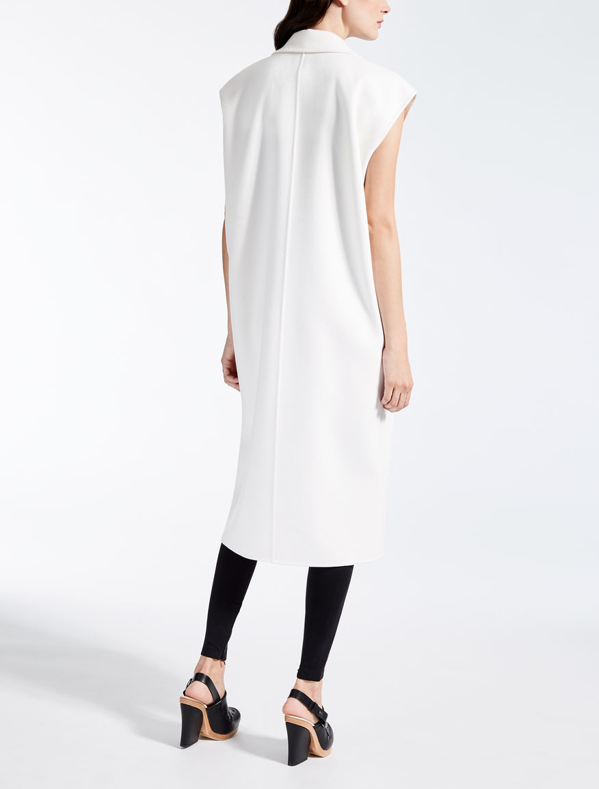

Шерстяной жилет «Ciurma»
 Описание товара
Длинный жилет из сшитой вручную двойной шерсти и ангорской ткани с воротником из лацкана и боковыми карманами.
Характеристики товара
- Brand: MaxMara; Производство: Италия.
- Цвет: Слоновая кость.
- Ткань: 90% шерсть, 10% ангорский кролик.
- Не стирать. Не отбеливать. Не сушить в стиральной машине. Гладить при холодной температуре. Профессиональная сухая чистка.
Подробное описание товара
Без подклада. Двубортное кнопочное крепление.